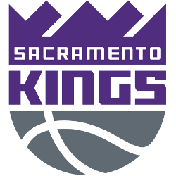

Home
Projects
Sites I Like
Home
Projects
Sites I Like
Projects
Here you can find some projects I've tinkered on.
IMDB Episode Ratings Visual
- Visualizing episode ratings of shows House MD and Monk using regex and webscraping, along with the library DT for displaying the table.
Super Smash Bros. Melee and Ultimate Tournament Locations (2018-2020)
- Visualizing map data with the library rnaturalearth as an R-based alternative to GIS.
Buddy Hield vs. the 30 teams of the NBA
- This is a table created via the libraries knitr and kableExtra.

Zipf's Law, Wikipedia, and Social Media (in progress)
- This project has usage of getting data via APIs, webscraping, and some plotting techniques via ggplot2.